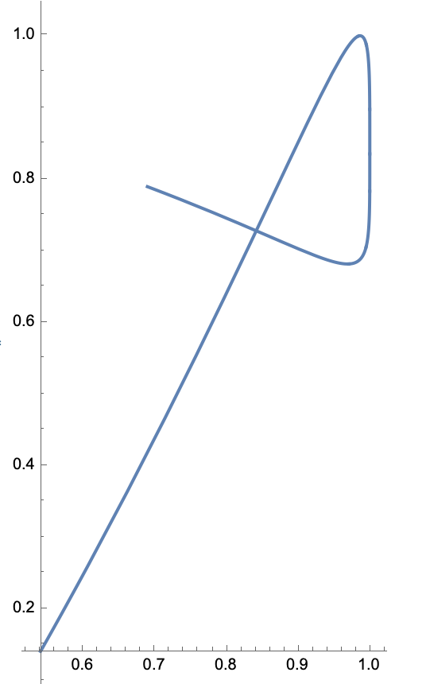

Definición
Una curva suave a trozos \(\alpha:[a,b]\to \mathbb{R}\) se llama:
- cerrada si \(\alpha(a)=\alpha(b)\),
- simple si para todos \( s,t \in (a,b] \), \(\alpha(s)\ne \alpha(t)\).
Ejemplos.
Simple, no cerrada.

No simple, no cerrada.

Simple, cerrada.
No simple, cerrada.